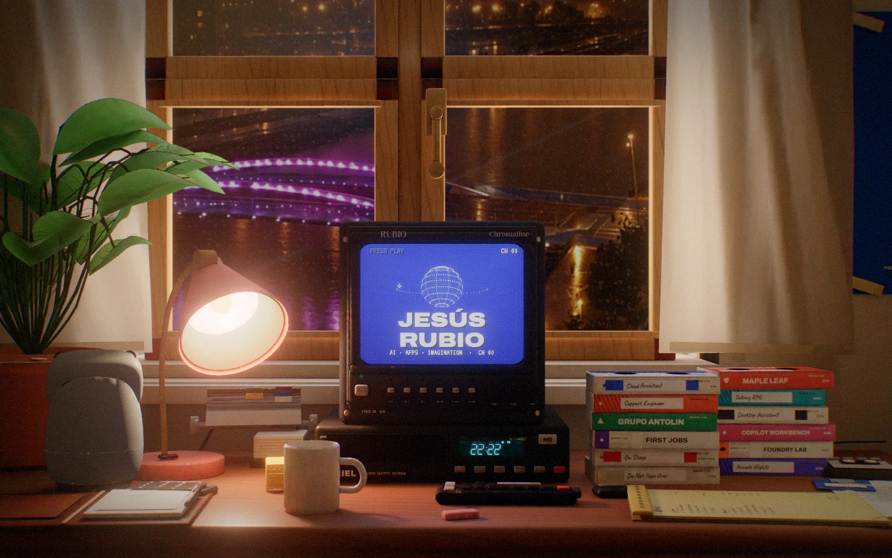
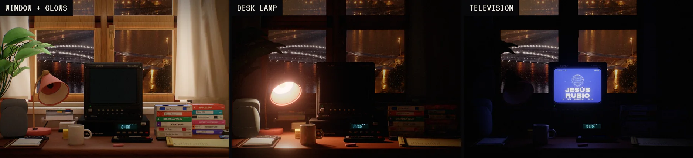
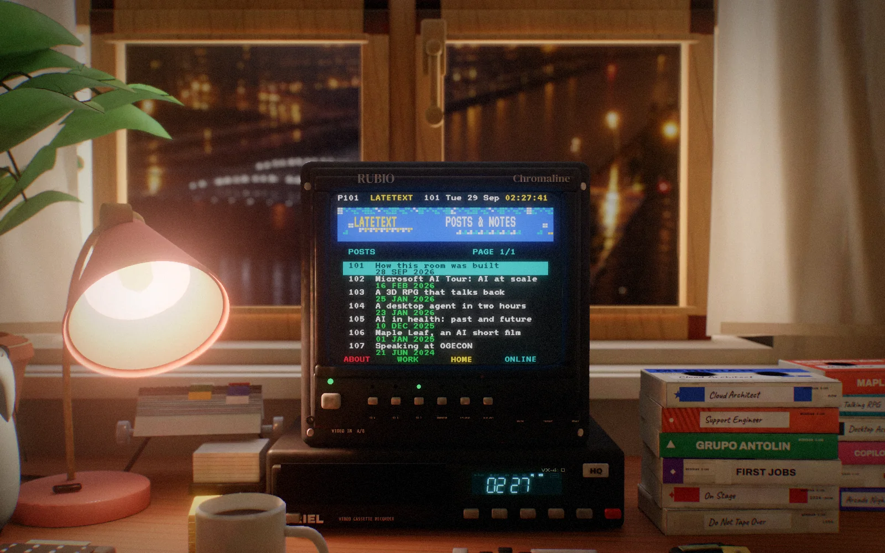
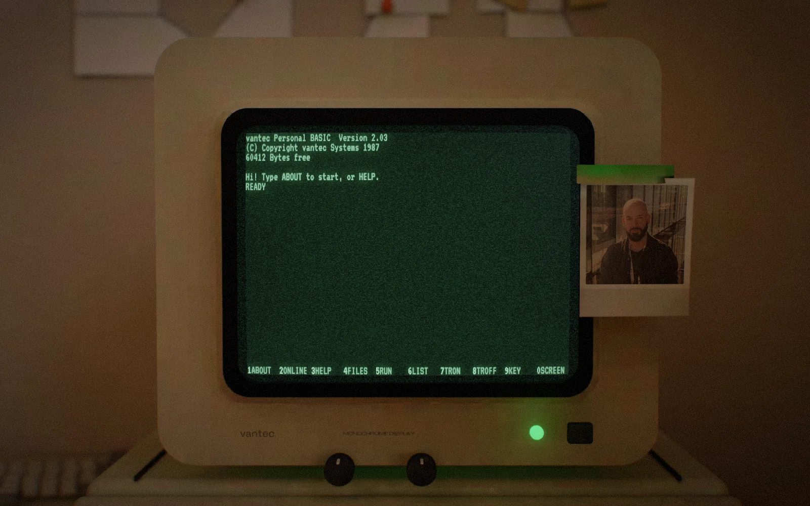
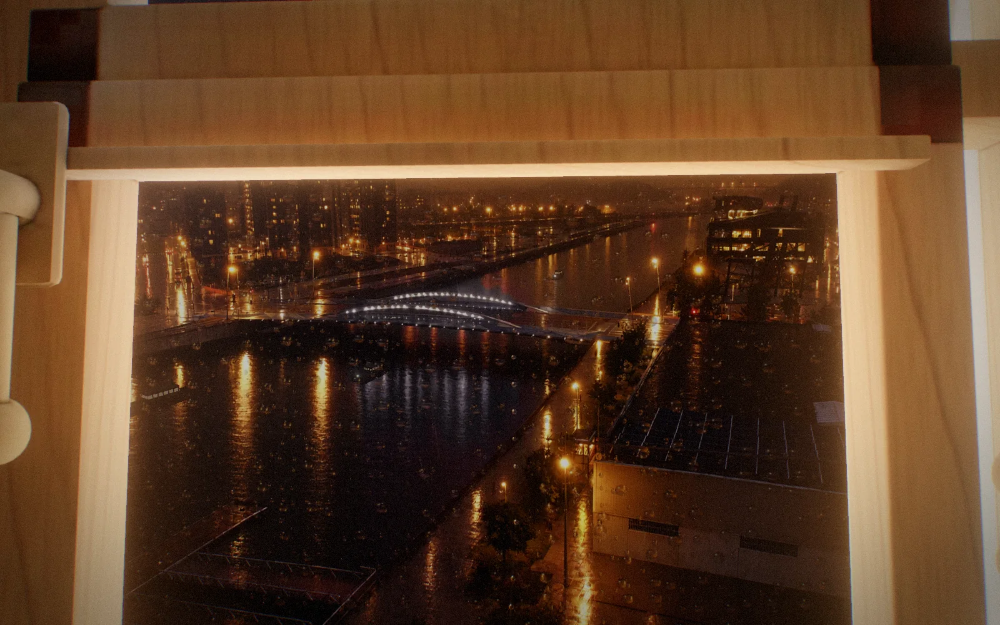

I wanted this website to feel less like a portfolio and more like a room I had left running after midnight. The first sketch was simple: a cosy 1990s workspace at night, rain sliding down a window, a television humming on the desk, and a beige old computer waiting for someone to type into it. The visitor should not be reading a page so much as borrowing a chair. They can point the camera at the television, browse tapes, open the computer, dial a little bulletin board, or fall back to a plain version when their device cannot run the full scene.
The idea comes from Felix Rieseberg's wonderful homepage (felixrieseberg.com) and his write-up Made by mechanical means; everything here was rebuilt from scratch. That distinction matters to me. I did not want a clone, and I did not want downloaded nostalgia pasted onto my name. I wanted to rebuild the mechanism in my own handwriting: the room, the props, the screen programs, the shaders, the sounds, even the little bits of fictional hardware branding.

Starting with a room, not a page
The site is organised like a tiny set. The camera begins at seated height, looking across a desk toward a video monitor and a rainy city window. The PC sits off to one side, important but not dominant. Tapes, a phone, a lamp, a compact music player, notes and cables give the desk practical friction. I wanted the navigation to be physical: about is on the computer, work lives on tapes, posts are teletext pages, online links are reached through a modem terminal. That structure made the interface slower than a normal website, but slower in the way a record player is slower than a playlist. The delay is part of the texture.
Every visible prop is procedural. I modelled the room with Python scripts in Blender rather than by hand-moving meshes. That made the build feel a little more like writing software than decorating a scene. A tape is a function that knows its sleeve width, bevels, label strip, handwritten title and stack offset. A keyboard is a loop over key rows. The window is a frame generator with mullions, wet glass and a separate outside city layer. The scripts are not glamorous, but they make the scene repeatable. If a tape label changes in the content file, the desk can be rebuilt with the same proportions and a new spine.
def make_tape(label, color, row):
sleeve = bevelled_box("TapeSleeve", width=.19, depth=.105, height=.025)
label_strip = paper_label(color=color, text=label)
place(label_strip, on=sleeve, side="spine")
sleeve.location.x += row * .027
return sleeveThe room scale is deliberately mundane. Nothing is heroic. The monitor is bulky, the keyboard is too deep, the tapes are slightly uneven, and the lamp throws a pool of light that fails to reach the corners. That is where the scene starts to feel like memory rather than product photography. Procedural modelling can become sterile quickly, so I added small variations everywhere: warped paper, misaligned labels, bevels that catch light differently, a mug that is not perfectly centred, and cables that refuse to be tidy.
Baking light, then letting it breathe
The visual trick that makes the room affordable in a browser is that most of the lighting is baked. Blender's Cycles renderer computes soft indirect light, contact shadows and the way the desk lamp bleeds into nearby objects. The result is stored in lightmap textures that three.js can display cheaply. I separated the bake into light groups: ambient window light, desk lamp, and television light. The first two are mostly fixed. The television light is baked white, then recoloured live based on what the screen is showing.
That means the room can react to the monitor without running real global illumination. When the TV is blue, nearby plastic and desk edges pick up blue. When the PC glows green, the surrounding bezel takes on a soft phosphor tint. It is a cheat, but it is a useful one: the expensive transport of light is precomputed, while the colour remains alive.

finalLight =
ambientBake * windowColor +
lampBake * warmBulb +
tvBake * sampledScreenColor;Export is through glTF, with object names and extras kept as a contract between Blender and the runtime. Static meshes keep their baked UVs. Interactive objects, such as buttons and tapes, carry simple metadata so the browser can attach pointer targets and state. The runtime does not need to know how a VCR was modelled; it only needs the named button objects, their labels, and which screen channel they control.
The expensive part of the illusion is not drawing the room. It is deciding which parts of the room should be allowed to lie.
Three.js as the stage manager
The browser runtime is a three.js scene with a handful of custom shaders layered on top. The monitor and PC screen are not videos. They are canvases rendered by little programs, then mapped onto curved glass. The CRT shader bends the image, adds a shadow mask, scanlines, subtle bloom and phosphor persistence. Persistence is important: without it, the screens look like flat canvases. With it, bright text smears just enough to suggest a tube that cannot quite forget the previous frame.
The television has a different temperament from the PC. Its shader adds VHS noise, chroma wobble, horizontal tearing and tiny tracking errors. Posts become a teletext service with blocky pages and page numbers. Work items become tapes. The home channel cycles through late-night station idents, weather and schedule cards. None of those programs are trying to imitate a real network; they are fictional broadcasts from the same rainy city outside the window.

The rain is another layered cheat. The city outside is a flat composition of distant buildings and lights. The glass carries droplets and streaks in a separate shader pass, distorted by slow noise and occasional brighter trails. The window does not need physically accurate water; it needs the rhythm of a wet night. Depth of field and bloom help hide the construction, but they are used sparingly. If everything blooms, nothing feels like light.
The old PC is a program inside the program
The PC became its own little software project. It boots through a fictional BIOS, drops into a green monochrome BASIC prompt, and keeps state for the life of the page. The text mode is 80 by 25 cells on a 640 by 400 canvas: eight pixels wide, sixteen pixels tall, VT323 rendered crisply, with normal, bright, dim, inverse, underline and blink attributes. The shell understands commands like ABOUT, ONLINE, FILES, RUN, LIST and WIDTH. It also has small secrets: COFFEE, LAMP, RAIN and a few other words a visitor might try when nobody is watching.
The BASIC interpreter is intentionally modest but real. It tokenizes expressions, parses operator precedence, runs numbered lines, supports FOR/NEXT, GOSUB/RETURN, IF/THEN/ELSE, DATA/READ, arrays, INPUT, sound statements and enough string functions to write small programs. Execution is time-sliced, so an accidental infinite loop cannot freeze the room. The keyboard buffer feeds INKEY$, Ctrl+C breaks a running program, and saved programs live in localStorage. It is overkill for a portfolio, which is exactly why it belongs here.

10 FOR I=1 TO 10
20 PRINT I;
30 NEXT I
40 PLAY "T140 O4 L8 C E G >C"ABOUT opens a pager rather than dumping text into the prompt. ONLINE launches a fake terminal program, dials the rainy city board, plays modem sound, then shows a block-character menu of links. The games are native text-mode programs: snake, a falling-block puzzle, and a tiny lander. They are not the point of the site, but they prove the computer is more than a menu painted on a texture.
Sound from scratch
I did not want borrowed loops or familiar startup sounds. Every sound is synthesized for this room: the PC speaker, the modem, floppy seeks, button clicks, rain beds and the music tracks. The PC speaker is a band-limited square wave through a small low-pass filter with a little buzz, enough to feel cheap without becoming painful. The music is built from simple synthesized parts: soft electric keys, filtered noise, tape hiss, and bass notes that leave room for rain.
Sound is also treated as interface feedback. Keys emit events so the 3D keyboard can move and click. The modem emits a long dial sound that can be skipped. Drives report busy state so the lead runtime can animate LEDs. The room is more convincing when the systems talk to each other through small, boring events.
Performance is mostly restraint
The full version asks the browser to do a lot, so restraint matters. The room geometry is static where possible. Lightmaps replace dynamic lights. Screen programs redraw only dirty text cells or simple regions. Canvases are fixed-size and then transformed, not constantly resized. Post-processing is kept to a short chain: CRT, bloom, depth of field and grain. Expensive effects degrade behind options for lighter CRT, reduced motion and lower quality.
The fallback page is part of the same philosophy. If WebGL2 is unavailable, or someone prefers the lite version, the content should still be reachable as text. The room is the invitation, not the gate. About, work, posts, online links and credits all come from the same content module, so the theatrical version and the plain version do not drift apart.
Looking outside
The window is not a backdrop you can only glance at. Hover the glass and it says LOOK OUTSIDE; click it and the camera leans over the desk until your nose is almost on the pane, and you can turn your head to look down over the ría. The view starts from a real photograph from home: the straight tidal channel, the basin and marina pontoons, apartment towers, the dark steel-framed building on the right bank, distant hills and the white bridge with pink-purple LEDs. The pipeline cleans the balcony artefacts, uses Azure OpenAI gpt-image to turn the same view into a rainy night and widen it sideways, then projects that private night image into the window panorama.
The boats are not painted into the picture. Each one is a small boxy hull placed on a water plane below the window and traced per pixel by the shader. Their paths are picked from points on the ría, and a water mask keeps them on visible water: a boat can disappear under the bridge, reappear beyond it, and leave only small navigation lights, cabin glow, a faint wake and broken reflections on the wet surface. When one passes close you hear a muted diesel putter through the glass.

A robot where the pencils were
The pencil cup is gone. In its place sits a Reachy Mini, the small open-source desk robot by Pollen Robotics, built from its own CAD meshes and asleep with its head tucked into its body. Click it, or press R, and it runs the same wake-up routine as the real one: the head rises on the SDK’s minimum-jerk curve, it plays its own little “toudoum”, tilts its head and settles. From then on it watches the pointer. Its head sits on a six-legged Stewart platform, and every frame the site solves the six motor angles and rods from the robot’s real geometry, turning the body too when the head alone cannot reach.
It also has a job. Rest the pointer on the tapes and it tells you what they are, in a speech bubble and out loud: the left stack is my career, the right one my personal projects. The voice is a neural voice from Azure AI Speech with a light robotic treatment, in English or Spanish depending on your browser, and the head sways to its own loudness with the same parameters Pollen uses for Reachy’s speech. Click it again and it goes back to sleep with a sigh.
Credits and the useful kind of inspiration
This room exists because I saw a web page behave like an object and could not stop thinking about it. Felix Rieseberg's homepage gave me permission to treat a personal site as a place. His write-up showed how much craft can hide behind a playful surface. I kept that spirit, but rebuilt the work in my own system: original code, original text, original sounds, original fictional brands, and a different room shaped around my own interests.
The tapes on the desk are my own work now: the AI short film, the RPG whose characters talk back, the desktop agent, the Copilot tools and the Foundry experiments. The foundation is here, and it will keep changing. It is a desk at night, built out of Python, Blender, lightmaps, shaders, little text programs and a stubborn belief that a homepage can have weather.
1. All visible hardware names in the room are fictional. The point is not to reproduce old brands; it is to remember the feeling of machines with labels, buttons and quirks.